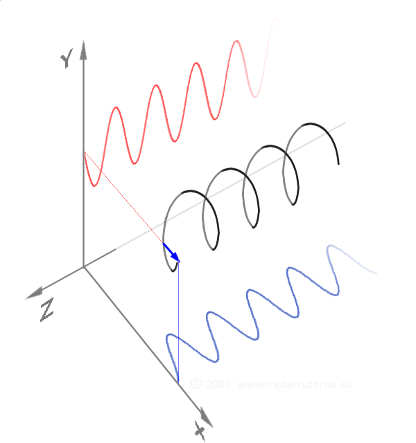

-
My Focus:
Bulk Probing Optical spectroscopy measurements. Entire electronic band structure is probed, making it a complementary and essential probe. - \(\rightarrow\)Detect spin-splitting via Optical Probing
- Previous Talks: Landau theory, spin-space groups, non-symmorphic symmetries.
-
ARPES (Topic 4): Momentum-dependent spin-splitting ($E(\mathbf{k},\uparrow) \neq E(\mathbf{k},\downarrow)$) at the material's
surface .
Overview
Part 1
From band structure to optical response
- Optical Conductivity Tensor
- Magneto-Optical Kerr Effect
- Measurements
Part 2
- Cobalt-doped FeSb2
- Diagonal Elements \(\sigma_{ij}\)
Part 3
- Other Altermagnet Candidates
- Debunked cases
- Offdiagonal Elements \(\sigma_{ij}\)
Breaking the Symmetry
a: Ferro
- \(\mathbf{M} \neq 0\)
Breaks time-reversal symmetry \(\mathcal{T}\)- No spin degeneracy

b: Anti-Ferro
- \(\mathbf{M} = 0\)
Preserves symmetry \(\mathcal{T}\)- Spin-degenerate electronic bands

c: Altermagnet
- \(\mathbf{M} \neq 0\)
Breaks \(\mathcal{T}\) butpreserves \(\mathcal{T}\mathcal{D}\)

Optical Behavior
Linear Response Theorem and the Optical Conductivity Tensor
Normal materials follow
- $\tilde{\varepsilon}_{ij}(\omega)$: dielectric tensor
- $\tilde{\sigma}_{ij}(\omega)$: complex optical conductivity tensor (equivalent)
Without Magnetization
$$\tilde{\varepsilon} = \begin{pmatrix} {\varepsilon}_{xx} & 0 & 0 \\ 0 & {\varepsilon}_{xx} & 0 \\ 0 & 0 & {\varepsilon}_{xx} \end{pmatrix}$$
With Magnetization
$$\tilde{\varepsilon} = \begin{pmatrix} \tilde{\varepsilon}_{xx} & \tilde{\varepsilon}_{xy} & 0 \\ -\tilde{\varepsilon}_{xy} & \tilde{\varepsilon}_{xx} & 0 \\ 0 & 0 & \tilde{\varepsilon}_{zz} \end{pmatrix}$$
Off-Diagonal elements and \(\mathbf{M} = 0\)?
Altermagnet!
The Kubo Formula
Linking Band Structure to Optical Response
\[\tilde{\sigma}_{xy}(\omega) \propto \frac{1}{\omega} \sum_{n, m} \int_{\text{BZ}} d\text{{k}} \frac{f(E_{n, \text{{k}}}) - f(E_{m, \text{{k}}})}{E_{m, \text{{k}}} - E_{n, \text{{k}}} - \hbar \omega - i\Gamma} \times \langle \psi_{n, \text{{k}}} | \hat{v}_{x} | \psi_{m, \text{{k}}}\rangle \langle{ \psi_{m, \text{{k}}} | \hat{v}_{y} | \psi_{n, \text{{k}}} }\rangle \]
1. The Resonance (Denominator)
- \((E_m - E_n - \hbar\omega)\) dictates when a peak occurs
- Vertical interband transitions at specific \(\text{k}\)-points
2. The Topology (Matrix Elements)
- \(\langle \hat{v}_x \rangle \langle \hat{v}_y \rangle\) relates to Berry Curvature
- In altermagnets, this product survives the BZ sum
◆Symmetry Note:
In standard AFMs, \(\sigma_{xy}(\text{k}) + \sigma_{xy}(\mathcal{PT}\text{k}) = 0\).
◆Altermagnetism:
Alternating spin-polarization in \(\text{k}\)-space \(\rightarrow\) net non-zero sum for the off-diagonal elements.
The Kubo Formula
\[\tilde{\sigma}_{xy}(\omega) \propto \dots \sum \int \frac{\Delta f}{\Delta E - \hbar\omega} \times \langle \hat{v}_x \rangle \langle \hat{v}_y \rangle \]


Standard AFM: \(\sigma_{xy} = 0\)
Altermagnet: \(\sigma_{xy} \neq 0\)
The Kubo Formula
\[\tilde{\sigma}_{xy}(\omega) \propto \dots \sum \int \frac{\Delta f}{\Delta E - \hbar\omega} \times \langle \hat{v}_x \rangle \langle \hat{v}_y \rangle \]
Standard AFM: \(\sigma_{xy} = 0\)
Altermagnet: \(\sigma_{xy} \neq 0\)
The Magneto-Optical Kerr Effect (MOKE)
Measuring the Optical Conductivity Tensor
We measure how polarization state changes upon reflection.
$$\tilde{\sigma}_{xy}(\omega) \propto \theta_K + i\eta_K $$
- $\theta_K$ (Rotation) $\leftrightarrow$ Dispersive part, Im($\tilde{\sigma}_{xy}$)
- $\eta_K$ (Ellipticity) $\leftrightarrow$ Dissipative part, Re($\tilde{\sigma}_{xy}$)
Polarization Conventions:
- a: polar
- b: longitudinal
- c: transversal

The Magneto-Optical Kerr Effect (MOKE)
Rotation angle and Ellipticity, Decomposition of CPL


The Magneto-Optical Kerr Effect (MOKE)
Measuring the Kerr Rotation and Ellipticity
Extract the
The Magneto-Optical Kerr Effect (MOKE)
Calculating the Optical Conductivity Tensor
Kramers-Kronig Relations
Connecting Real and Imaginary Parts
Condition:
$$ \text{Re}[f(\omega)] = \frac{1}{\pi} \mathcal{P} \int_{-\infty}^{\infty} \frac{\text{Im}[f(x)]}{x - \omega} dx$$
$$ \text{Im}[f(\omega)] = -\frac{1}{\pi} \mathcal{P} \int_{-\infty}^{\infty} \frac{\text{Re}[f(x)]}{x - \omega} dx $$

Part 2: Cobalt-doped FeSb2
A Case Study in Altermagnetism
Cobalt-doped FeSb2
A Case Study in Altermagnetism

The Parent Compound (FeSb2)
Correlated narrow-gap semiconductor
Band Structure

Resistivity

- Transport gap of approximately 30 meV
- Optical gap of roughly 120 meV
- No long range magnetic order
- strong itinerant spin fluctuations
The Parent Compound (FeSb2)
Correlated narrow-gap semiconductor
- Transport gap of approximately 30 meV
- Optical gap of roughly 120 meV
- No long range magnetic order
- strong itinerant spin fluctuations


Cobalt-doped FeSb2
Closing the gap and stabilizing the altermagnetic state
- Structure: Crystal structure is preserved
- Metallization: Semiconducting gap is closed
- Suppression of Fluctuations: Spin fluctuations reduced
- Result: AFMo configuration is stabilized
- Persisting up to room temperature

- Cobalt: [Ar] 3d7 4s2
- Iron: [Ar] 3d6 4s2
- \(\rightarrow\) Adds 3d electrons
- "Carrier tuning"
Cobalt-doped FeSb2
Closing the gap and stabilizing the altermagnetic state
X-ray diffraction patterns

Crystal structure

Engineering the Altermagnet
Carrier Tuning (15% Co Substitution)
Engineering the Altermagnet
Identifying the Feature (The 0.1 eV Peak)
Identifying the Altermagnetic State
The DFT Comparison (NM vs. AFMe vs. AFMo)

Only the
Identifying the Altermagnetic State
Non-Relativistic Spin Splitting

- Clear spin-splitting of the Fermi surface
- Alternating spin-polarization across the Brillouin zone
- Results in non-zero off-diagonal optical conductivity